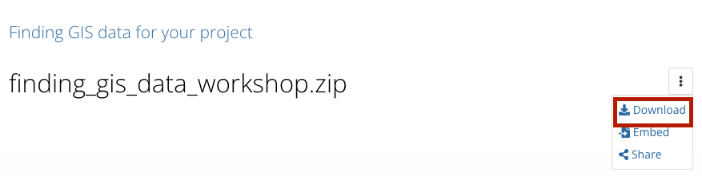

2. Coordinates
- Learn where to find coordinate information for locations
- Learn how to format coordinates in a table so they can be opened in a map
- Learn how to import a table of coordinates into a GIS mapping interface
In class activity
- Open a new spreadsheet, for example in Excel, or quickly make a new Google Sheets by typing
sheets.newinto a browser.
- Create three header columns,
name,latitude, andlongitude.
- In a new tab, navigate to Google Maps .
- Find a location you are interested in mapping.
- In your spreadsheet, under the
namecolumn, give the location a name.
Right clickon the map in Google maps in the area you are interested in. A window with coordinates should pop up. Click on the coordinates, and they will copy to your clipboard.
- Paste the value into the spreadsheet, under the
latitudecolumn.
- You will need to edit the values so that the first number in the set of coordinates is under the
latitudecolumn, and the second number is inlongitudecolumn. Make sure to include the negative-symbol, if it exists, and remove the separating comma.

Properly formatted table.
- Repeat this process and add two more points, so you have three altogether.
- When you are finished entering your data, name your spreadsheet, and export it to a
.csvformat by clickingFile→Download→Comma Separated Values (.csv).
Demo and explore more
Sample data
You can download and explore sample datasets related to this activity from the workshop data homepage, hosted on the Open Science Framework (OSF.io)
- Visit the workshop data homepage .
- Click the three vertical dots icon and select
Download. 
- The folder that downloads to your computer contains sample data from all the workshop activities. It is a zipped or compressed file. In order to use it, you will have to
double-clickit on Mac orright-click→ExtractorUncompresson a PC.
4. The sample data for this activity, Activity 2 is in the folder activity2_coordinates. In this folder you will find the following files:
example-coordinates.csvexample-coordinates.geojson
Follow-along steps
- Open QGIS (download instructions ).
- Add a basemap (instructions ).
- Import the coordinates (instructions ).
- Right-click
example-coordinatesin the Layers pane →Zoom to layerto see the points better. - Right-click
example-coordinatesin the Layers pane →Open attribute tableto view the data attributes. - Right-click
example-coordinatesin the Layers pane →Properties→Symbology→ ChangeSingle SymboltoCategorized→ UnderValuechoosetype→Classify→OKto change the color symbols of the map. Click the dot icon next toSymbol(underneathValue) to change the size of the points. - Save as spatial data by right-clicking
example-coordinatesin the Layers pane →Export→Format = GeoJSON→ Click...icon next toFilenameto choose where to save. - Notice how you can drag the
.geoJSONfile directly into the QGIS window to display the geometry now (rather than use the table import window). This is because it is stored as spatial data.